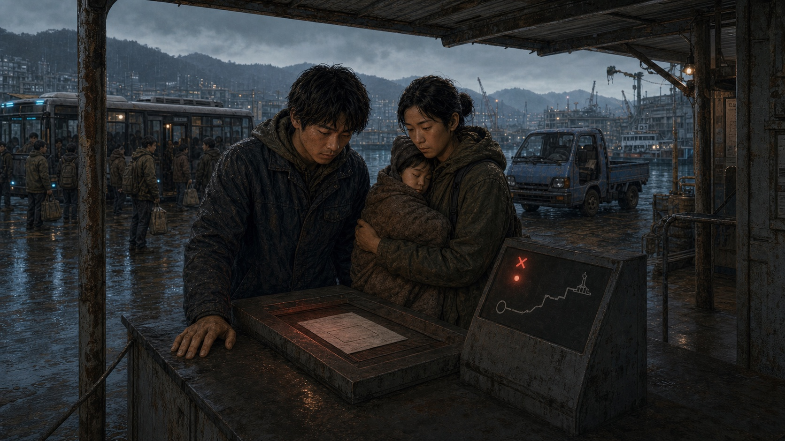
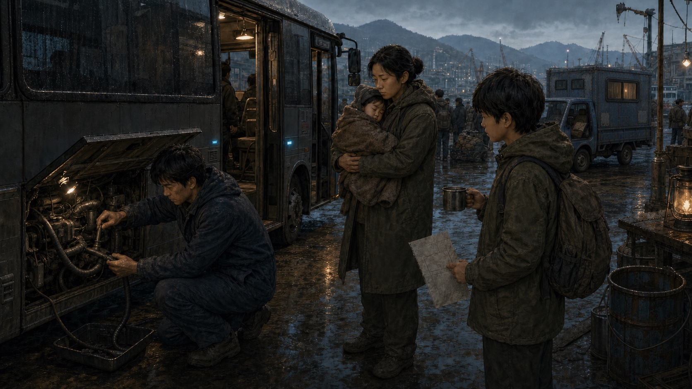

사유가 없는 이송표

버스를 떠나기 전, 도윤이 이송표를 내밀었다. 가족 이름과 짐 무게는 적혀 있었다. 사유와 최종 승인자 칸은 부모님의 표처럼 비어 있었다.
A · 연결 문구와 다음 본문이 함께 나옵니다. 추가 탭이나 강제 대기는 없습니다.수리를 마치고

부산 감천 부두
공구를 하나씩 공구함에 넣는 동안, 버스 안 공기가 조금씩 데워졌다.
이 안은 별도 탭이 하나 더 필요합니다. 같은 장소의 연속 사건에는 A안을 추천합니다.이후 대화는 기존 흐름으로
자동 읽기·기록·앞 대사·선택·결과 저장은 기존 기능을 유지하는 제안입니다.
실제 시간이나 장소가 바뀔 때만 짧은 표기를 붙입니다. 예를 들어 작업장에서 바로 부두로 가는 선택은 실제 비용이 5분이므로 ‘5분 뒤 · 감천 부두’가 가능합니다.
모든 사건에 ‘5분 후’를 붙이거나, 수리 비용으로 이미 지난 시간을 다시 진행시키지는 않습니다.
난방이 끊긴 가족 버스
수리 결과
새 연결부를 조여 넣자 미지근한 바람이 돌아왔다. 유나의 굳었던 손이 조금 펴졌다.
새 부품 선택 원문 예시입니다. 실제 현재 선택은 확인되지 않았으며, 자원·시간을 변경하지 않습니다.